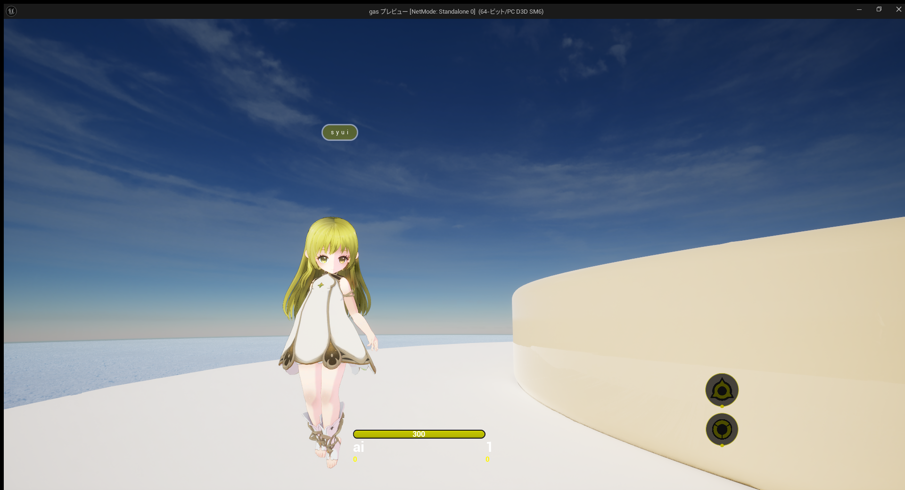

vrmで統合する
.vrmを読み込んで、別の.vrmに統合する方法を紹介します。最終的にはueでも動くようにします。
編集しているうちにblenderのシェイプキーがueのモーフターゲットにexportできなくなったり、髪の毛のウェイトが消えていたりといったトラブルが多発します。
blenderのvrmはspring boneを設定して髪の毛を動かしています。これはboneに付いているcolliderと連動しています。
髪の毛はboneとも連動していて、armature(bone)を統合したあとにheadとheadをつなげなければなりません。
統合するobjectの動きを本体に追従したい場合は頂点とアーマチュアを正しく設定しなければなりません。データ転送を活用します。
髪の毛が動かない場合、物理シュミレーションが設定されているか確認してください。ueのkawaiiphysicsでも設定できます。私はueのほうで設定しています。また、髪の毛のウェイトが剥がされていないか確認してください。データ転送後は髪の毛にウェイトが付いているか確認しましょう。
シェイプキー(モーフターゲット)が消えてしまうのはvrm1に起因します。blenderで編集する場合はvrm0をベースにしてください。また、シェイプキーは元のobject名に再統合しなければ消えてしまいます。
- vrm0をベースにしているか。
- objectを元の状態に再統合できているか。
- 髪の毛にウェイトはあるか。
- 髪の毛に物理シュミレーションはあるか。
具体的な手順
hair(髪の毛)とbody(体)で分けられたvrmを読み込むこととします。これを統合します。
- まず、boneの統合を行います。boneはarmatureというようです。不要なboneを削除します。そして、完成版となるarmatureを最後に選択して統合します。
- 次に必要なboneをつなぎます。boneを編集モードで編集し、
J_Bip_C_Head->headを選択し、右クリックで親をオフセット維持で設定します。 - 次にhairを選択し、モディファイアからデータ転送を行います。ソースに
body, 頂点グループにJ_Bip_C_Headを選択します。ここが特に重要です。そして、頂点データにチェックを入れ、頂点グループを選択します。最後にデータレイヤーを生成し、適用します。これでhairとbodyがつながった状態になりました。bodyが主体になります。
ウェイトがhair(J_Bip_C_Head)に設定されていることを確認してください。今後、hairのobjectをいじると削除される可能性があります。
ueで物理シュミレーションを設定する
- 次にueでhairを動くようにします。ueでvrmを読み込んで、
ABP_Post_${name}を編集します。kawaiiphysicsでRoot BoneにJ_Sec_Hair_1_xxを1-12まで入れて、Capsule Limitsにchest,hipなどを設定します。私はchestの値を大きめにして対処しました。 - 次に、服が体に入りこまないようにしなければなりません。これも先ほどと同じように設定します。
- 設定後は
ABP_Post_${name}をコピーしておきましょう。このファイルは新しくvrmを読み込むと上書きされるため、最新版を読み込んだあと再設定しやすいように。
blenderから読み込んだmodelを動かしてみた。

blendshapeとvmc
vmcは.vrmをblenderで開いたときblendshape(ブレンドシェイプ)が設定されていれば大抵動くと思います。
ただし、blenderで編集した際に使えなくなってしまう可能性が高いです。例えば、objectを分離した場合がそうです。最初の構成にobjectを統合すると動くようになります。